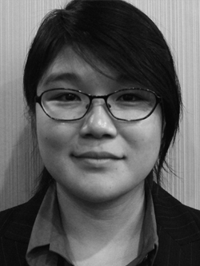
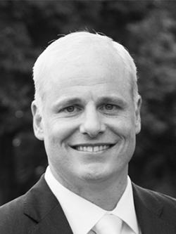

Our Team
Our people come from all over the world, with a broad diversity of educational and professional backgrounds. We are bound by a shared passion for innovation and the commercialization of scientific discoveries.
Founding Team
-
Dinesh Ganesarajah
Managing Director
Linked In
Dinesh Ganesarajah has overall responsibility for managing PreScouter. Dinesh previously managed the new media project portfolio at the BBC, assessing business opportunities and managing a process that shaped the BBC’s multi-million dollar budget for new media projects. For Openbet Technologies, he established an offshore office in India and managed delivery of some of the most highly trafficked gambling websites in the world. Dinesh holds an MEng in Computing from Imperial College London and an MBA from the Kellogg School of Management at Northwestern University, where he was a McCormick Scholar.
-
Ashish Basuray
Chief Scientist
Linked In
Ashish Basuray has overall responsibility for the service delivery component of PreScouter’s business. Ashish previously worked as a management consultant at BearingPoint Inc., as well as having served in the US Peace Corps. Ashish earned his Bachelor’s of Science in Chemistry from Carnegie Mellon University. Ashish completed his PhD in Chemistry at the Weinberg College of Arts and Sciences at Northwestern University, focusing his research on designing nanoscale architectures, molecular electronics, molecular memory and organic solar materials.
-
Doug Pollina
Chief Financial Officer
Linked In
Doug Pollina manages PreScouter’s financial, legal, and back-office operations. Doug’s previous experience includes seven years as a management consultant with Deloitte, four years as a Financial Systems Project Manager at Midway Games, Inc. a Chicago-based software development company, and two years in a finance leadership role in New Product Development at Chamberlain Industries – a leading durable goods manufacturer. Doug holds a Bachelor’s degree in Finance and Management Information Systems from the University of Notre Dame and an MBA from the Kellogg School of Management at Northwestern University.
-
Alok Tayi
Chief Strategist
Linked In
Alok develops and executes strategic initiatives that create medium- and long-term improvement to PreScouter’s business. He is currently a Postdoctoral Fellow at Harvard University George Whitesides’ Lab. Additionally, he is a Visiting Scholar at the University of Tokyo hosted by Professor Takuzo Aida. His research interests exist at the intersection of supramolecular chemistry, energy, and health. Alok completed his PhD at Northwestern University in Materials Science under the advisement of Professor Samuel I. Stupp. There, he was a NERC Energy Fellow and an Energy Cluster Fellow. Alok received his BS in Materials Science, Cum Laude with Honors from Cornell University in 2006. Between Cornell and Northwestern, he worked on long-term research projects at Hewlett Packard Corporation and Xerox Corporation.

Service Delivery Team
-
Aki Ueda
Scholar Engagement Coordinator
Linked In
Aki received her BA in Biological Sciences from Cornell University in 2006, and completed her PhD in Biomedical Sciences at Northwestern University in 2012. Her research focused on the molecular mechanisms of helper T-cell subsets and their regulation of inflammation and autoimmune diseases. During this time, she was a recipient of the 2-year and 1-year Predoctoral Fellowships from the American Heart Association.
-
Patricia Rubert-Nason
Project Manager
Linked In
Patricia Rubert-Nason started with PreScouter as a part of the Global Scholar Network before moving into a full-time role. She is now manages projects for Prescouter. Patricia works closely with client companies to ensure the successful completion of each project. She is responsible for project staffing, coordinating scholar teams, scheduling meetings, and managing expectations of both clients and scholars. Patricia earned her Bachelor’s of Science in Bioengineering from Rice University and completed her PhD in Chemical Engineering at University of Wisconsin, Madison. Patricia’s research was focused on the use of computational modeling to better understand catalytic processes and to design improved catalytic materials. Prior to her PhD, Patricia worked at a biotech startup producing custom monoclonal antibodies.
-
Patrick Hanway
Technical Project Manager
Linked In
Patrick is a Technical Project Manager at PreScouter. He received his BS in chemistry from Missouri Western State University in 2009 and his PhD in organic chemistry from Iowa State University in 2014. He is currently a Postdoc at the University of Minnesota and his research has been based on the synthesis of molecules that can be triggered by light, heat, or chemical addition to form reactive intermediates. This allows for the observation and understanding of these intermediates through the properties the molecule exhibits. Patrick’s current work is on the synthesis of novel indole based compounds with the potential for biological activity.
-
Marija Jovic
Technical Project Manager
Linked In
Marija Jovic was part of the PreScouter's Global Scholar Network before moving into a full-time role. She now provides scientific advice and manages projects for PreScouter. Marija works closely with PreScouter’s clients to provide positive results at the end of each project. She is responsible for project staffing, coordinating scholar teams, scheduling meetings, and ensuring that the project always stays on track and that the expectations are met. Marija finished her Master’s degree in Chemical Engineering from Belgrade University and completed her PhD in Organometallic Chemistry and Catalysis at Swiss Federal Institute of Technology (ETH Zurich). Marija’s research was focused on understanding reaction mechanisms in order to rationally design catalysts for polymerization and metathesis reactions. Prior to her PhD, Marija worked in industry on synthesis of new textile dyes.
-
João Guerreiro
Lead Scientist and Technical Project Manager
Linked In
João Guerreiro is one of PreScouter Lead Scientists and Technical Project Managers. He helps clients design and define the projects and leads the PreScouter Scholar Team towards successful deliveries, ensuring PreScouter projects meet both client and scholars expectations. He is also responsible for developing new initiatives and products as one of PreScouter's Lead R&D Scientist. Prior to joining PreScouter, João worked as a freelance life science consultant. As an academic, João performed research in the fields of Stem Cells, Gene Therapy and Tissue Engineering at the Massachusetts Institute of Technology in the US, the University College London in the UK and the University of Lisbon in Portugal. He holds a PhD in Bioengineering Systems and a Masters in Biological Engineering.
-
Lewis Tomalin
Technical Project Manager
Linked In
Dr. Lewis Tomalin recently received his PhD from Newcastle University UK in Systems Biology. Lewis’s research was focused on using computer modelling approaches to study stress-activated cell signalling pathways in both young and ageing organisms. Lewis also has experience working in science policy and the pharmaceutical industry. As a PreScouter scholar, Lewis has worked on around 13 projects, many of which were as a team leader. He is currently located in the UK (+6 hours from CT).
-
Charlie Wright
Technical Project Manager
Linked In
Charlie Wright works with PreScouter's clients to achieve successful project outcomes by coordinating between clients and scholar teams; he is responsible for ensuring that clients' innovation needs are being addressed and for managing the timeline of project deliverables. He started working with PreScouter as a member of the Global Scholars Program. Charlie earned his PhD in Biophysical Sciences from the University of Chicago. He developed workflows to automate the experimental acquisition and computational analysis of microscopy images to elucidate how the stochastic behavior of individual organisms relates to the regulation of complex biological processes. He graduated with a BA in Physics, Molecular and Cellular Biology, and Spanish from Vanderbilt University.
Sales Team
-
Mike Zobitz
Director of Sales
Linked In Email
Mike leads the sales group at PreScouter. Following twenty years of experience as a sales leader and over a decade of focusing on the development of Chicago based start-up companies, Mike joined PreScouter in April of 2014. Specializing in developing talent and proper early business structure, Mike drives the sales group to grow PreScouter’s client base and overall share of the market. A published contributor to sales magazines and publications, presenter at multiple Fortune 500 corporate events and an awarded sales and management trainer and consultant, Mike’s wide skill set and experience are leveraged in many ways toward PreScouter reaching its goals. New business development as well as building positive relationships with existing clients are some of Mike’s day to day focuses. Mike spends his free time with his wife and daughter exploring Chicago, attending sporting events and traveling.
-
Corey Katz
Account Executive
Linked In Email
Corey is responsible for expanding PreScouter’s customer base and building lasting relationships with clients. Corey graduated from the University of Iowa with a BBA in Finance in 2011. He held a variety of sales positions before joining the PreScouter team including Assistant Manager with JPMorgan Chase and Account Executive with a technology start up, Geofeedia. During his free time, Corey enjoys attending live music around the Chicagoland area and plays several different styles of guitar.
-
Mike Markham
Account Executive
Linked In
Mike Markham joined Prescouter with extensive experience in sales and customer service. Mike developed his skills working in sales for Anheuser Busch, management for Enterprise Rent-A-Car, and supervising a large call center for Vail Resorts. Mike earned his B.S. in Marketing from Roosevelt University in 2004. His ability to create relationships and foster an environment of understanding allows potential clients to recognize the value Prescouter has to offer. Originally from Chicago, Mike currently resides in Vail, CO where he and his wife explore the outdoors while mountain biking and skiing.
-
Patrick Degnan
Account Executive
Email
Patrick graduated from Colorado State University with a BA in Economics. Prior to PreScouter, he worked for a telecom start up. In his free time, Patrick likes to spend time with his nieces and nephews.
-
Catherine Lilly
Account Manager
Linked In
Catherine Lilly works closely with PreScouter’s clients to ensure all projects are completed to their satisfaction. She is responsible for project staffing, coordinating scholar teams, scheduling meetings, and checking that only quality information is brought to the client. Catherine has also worked in accounting for 2 years. She received her BA in Biochemistry from Knox College.
-
Eric Joyce
Account Manager
Linked In Email
Eric Joyce is an Account Manager with PreScouter located in our Evanston office. He has close to 20 years of client relationship management and sales management experience specifically providing value added solutions through a consultative approach. He strives to learn more about our client’s business and strategies to enable a true partnership allowing his clients the greatest return on their investment in PreScouter. Eric graduated from U of I U/C in 1998 with a BA in Economics. He has honed his skills managing successful business relationships and sales teams working with mid size companies through Global Fortune 50 clients in Financial Services, Market Research, Analytics and Web based Solutions. In his spare time Eric and his wife Kate are expecting their first child in Summer of 2015, and he enjoys following Chicago's pro sports teams including the 2010, 2013 and NOW 2015 Stanley Cup Champion Chicago Blackhawks! Go Hawks!
 -
Amy Chick
Account Manager
Linked In
Amy Chick works with existing clients to help them leverage PreScouter's services to achieve their business objectives. Before joining PreScouter, Amy worked in the Office of Advancement at the Kellogg School of Management at Northwestern University. Amy earned a B.A. in Economics from the University of Illinois at Urbana-Champaign in 2013.

Business Support
-
Jessie Towns
Sales & Marketing Coordinator
Linked In Email
Jessie Towns is responsible for marketing as well as recruitment for PreScouter. Her experience involves writing content for websites, developing marketing campaigns, and building a support portal for a software company. Jessie graduated from Purdue University with a Bachelor of Arts in Public Relations and Rhetorical Advocacy.
-
Mary Joyce
Finance Associate
Linked In Email
Mary works with CFO Doug Pollina to manage the financial and accounting services for PreScouter, and also provides Human Resources and Office Managerial support. She has over 10 years experience in Human Resources and Executive Administration with both small and large companies. Prior to joining PreScouter, she also worked as a professional actress in the Chicago area, and holds a BFA in Music Theatre from Illinois Wesleyan University.
-
Gopal Vaikuntam
Technical Product Manager
Linked In
Gopal leads the planning and execution of our digital products including our marketing, service delivery and operations tools and applications used at prescouter. He acts as a technology evangelist for the variety of home-grown and vendor-based softwares that PreScouter uses to manage its business. He has previously worked with Zoho where he created SaaS based mobile and tablet products. He holds a BE from Anna University, Chennai and an MBA in MIS and Marketing from Purdue University.
-
Stefanie Cramer
Process Improvement Lead
Linked In Email
Stefanie Cramer is obsessed with overcoming process inefficiencies and bottlenecks to ensure that PreScouter can continue to scale as a lean organization. She is currently focused on improving the Lead Generation and Appointment Setting processes with the ultimate goal of commercializing the business unit as an outsourced prospecting service.
Prior to this role, Stefanie was the Supervisor in the Account Management Department working directly with clients to find new ways to leverage PreScouter services. She graduated from the University of Illinois at Urbana in 2008 with a Bachelor of Science in Psychology focusing primarily on research methodology. After graduating, she spent several years as a research professional, including working as a Lab Manager at the University of Chicago.
Prospecting Team
-
Amal Dutta
Marketing Data Director
Linked In
Amal Dutta manages PreScouter’s databases, as well a team that finds and vets prospective clients that may value PreScouter’s services. Amal comes to PreScouter having previosuly worked in a number of database administration and analytics roles. Amal has a keen interest in business process improvement, CRM implementations and marketing campaign data management. Amal graduated from Gauhati University with a Bachelor of Science in Physics.